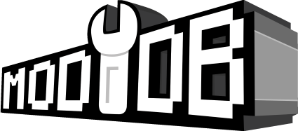

Battlefront 2 Remaster goal is to remaster Star Wars Battlefront 2 by creating high-quality graphical/visual mods to revamp the game. The goal is to update the original content, and after that, adding new content, transforming it into a whole new game for all the Star Wars Fans around the world to enjoy.
I'm Harrisonfog and I've been working on this project for over 2 years. It all started with a Graphics Mod I made for Battlefront 2, which became very popular. I made a few HD revamps of the original maps, to use with my Graphics Mod to overhaul the game's graphics even further. This maps were called Rezzed Maps. My mods and their combination were very well reviewed, people really liked my designs and retextures so I decided I'd keep working to eventually make revamped versions of all the base maps (19 ground maps / 15 space maps). This was the beggining of the Remaster Project.
I worked on this for over a year when I decided to contact other modders with a similar criteria to work on the playermodels and vehicles. I wanted to make them as realistic and high def as possible for this old engine. Eventually I found the right people, who would allow me to work freely in the graphics area; modders Javitolo98 and Calrissian97 worked on the 3D models of playermodels and vehicles, while I retextured and redesigned all the assets and we released Improved Sides Mod.
The mod was a success, as we worked on every model from the original game. Some, like the Sentinel Class Shuttle are rarely used, or sometimes used by other mods. We agreed to be thorough and accurate to the movies or, if not possible, to the original game and the lore.
The combination of the 3 mods gives Battlefront 2 a new polished look which allows gamers from different generations to enjoy this game, Graphics won't look as outdated, no matter if you are replaying or discovering BF2. Star Wars fans will surely enjoy it as this game truly has a lot of content. The mods are online compatible, so you can join other people's matches and play with the Remastered version.
The mods are currently being worked on, new maps will be released, our Side Mod will be further polished and hopefully we will soon enjoy a remastered version of this timeless classic. You can download all the mods on:
